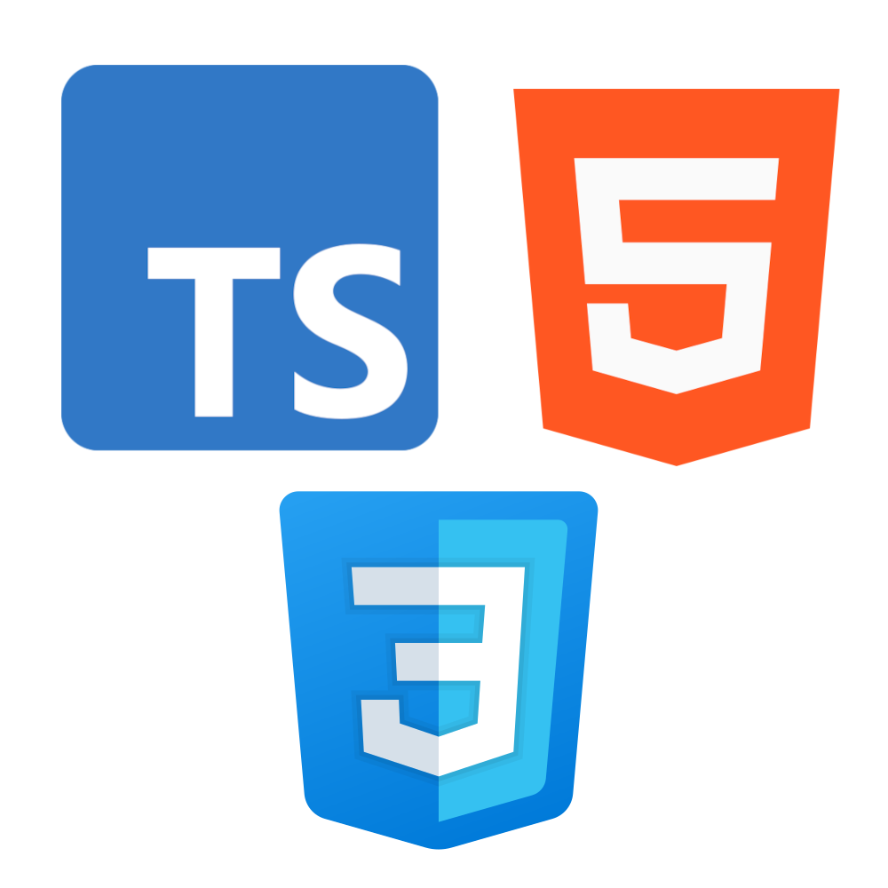
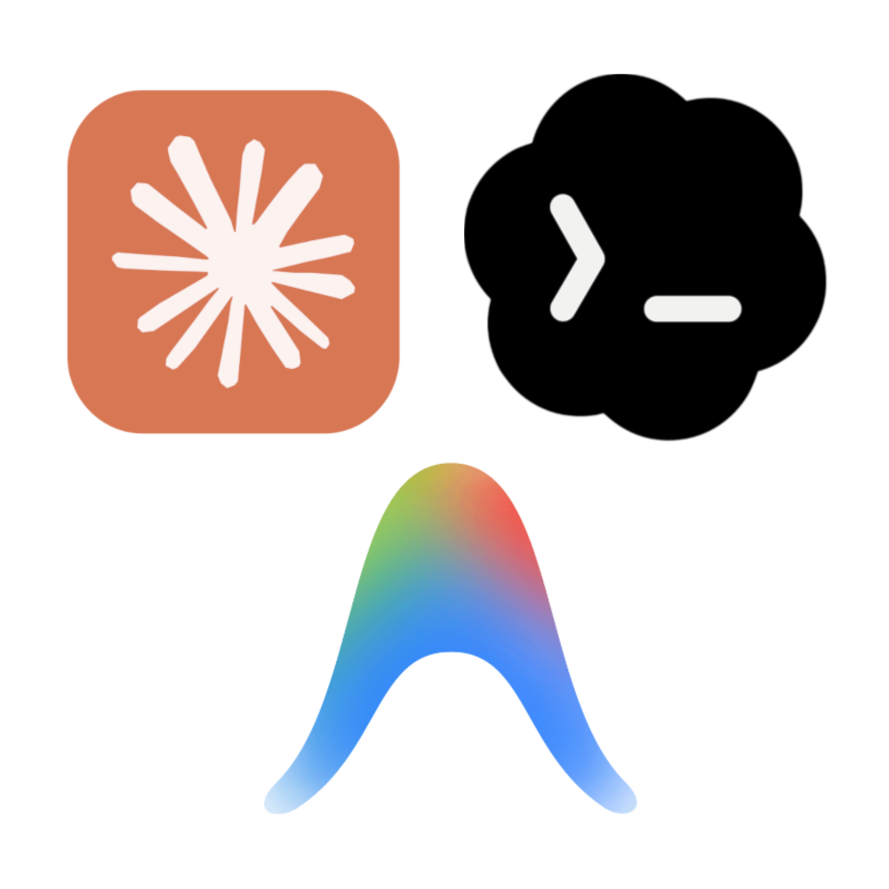
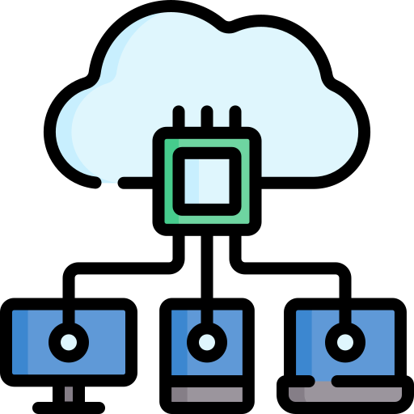
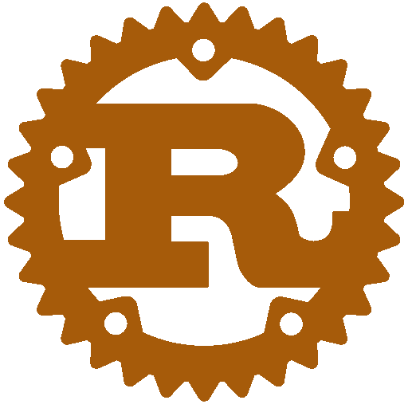
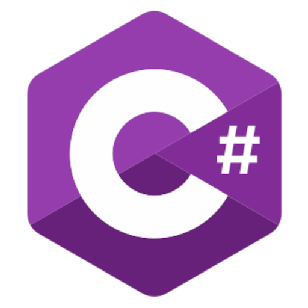
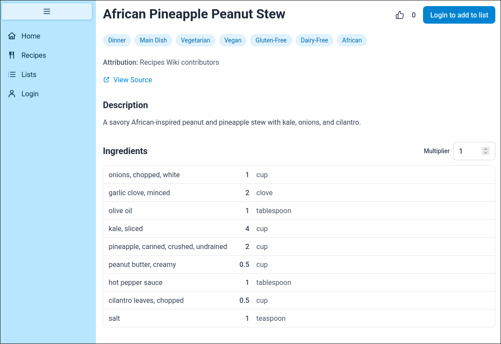
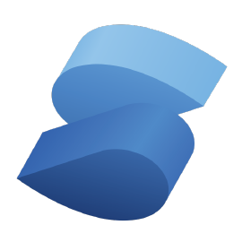
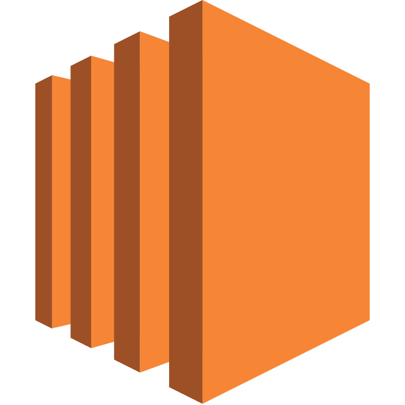
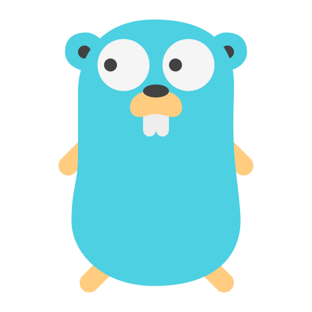
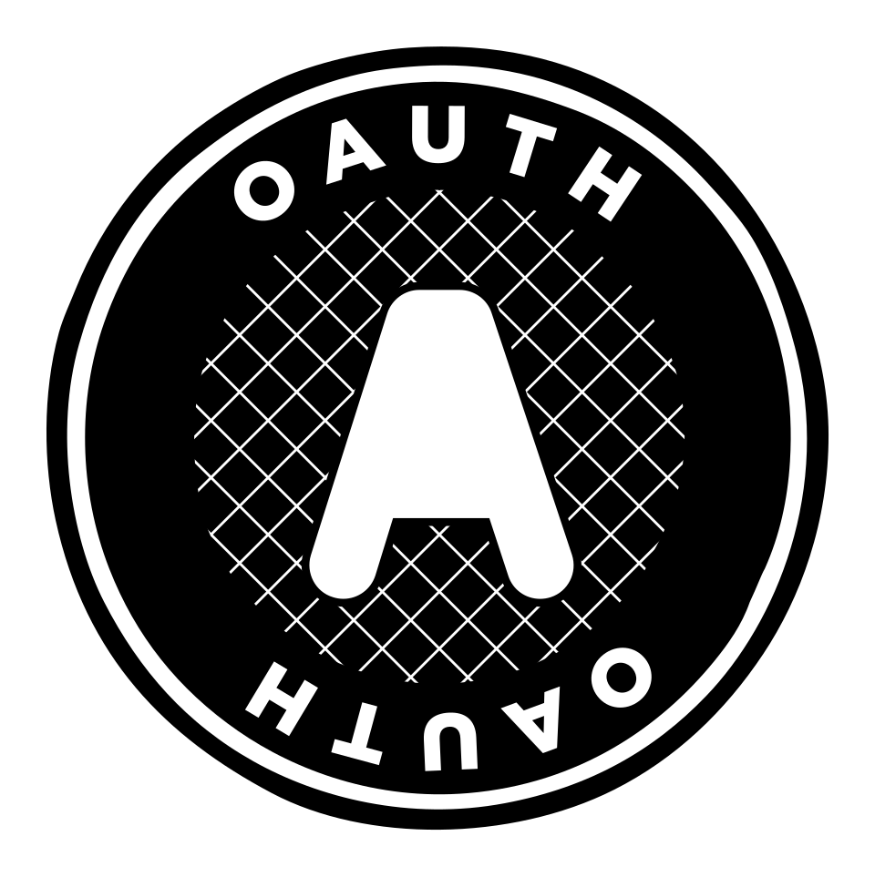

Hi, I'm Joseph West
A Biochemist turned Software Engineer
While completing my biochemistry degree in order to pursue a career in the medical field, I got introduced to programming and fell in love with it. Deciding that software engineering is what I want to do as a career, I am now finishing my second bachelors in Computer Science in December 2026.
I have many interests and skills in Computer Science, including but not limited to game-development, finance, full stack web, database design, and dev ops. I know I always have much more to learn and am excited to do so.
Technologies I'm focused on








Recent projects
Recipe List

A web app hosting many recipes and streamlining the process of shopping for their ingredients with a fully integrated grocery list application. Has many advanced features including automatic unit conversions and unification for all ingredients.



Schwab Portfolio Manager
A command line application that I use to execute trades in my Charles Schwab investment accounts, investing cash and rebalancing assets in order to execute my personal investment strategy

